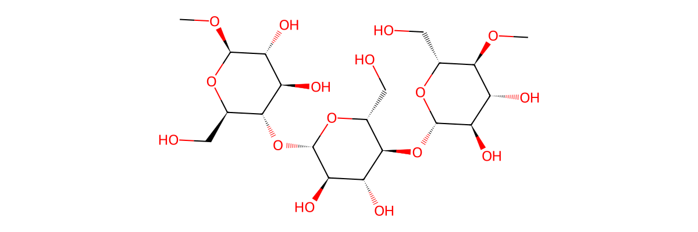
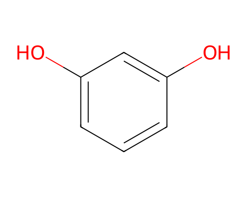

金属居中，观察配位形成MOL2 · 3D 球棍
读图提示螯合条件：同一配体的两个或更多位点同时结合到同一金属。紫色闭环用于讲解此条件，不代表已证实本体系形成该螯合物。
教师说明与结构依据课堂使用前可展开 ↗
课堂要点：中心金属固定在画面中央，纤维素链段先靠近，间苯二酚型片段随后靠近。黄色成对小球在成键前位于氧旁，成键后位于 O—M 键区，表示共用电子对；两个电子最初均由氧提供。实线表示形成后的配位键（教学布局）；这是课堂讲解顺序，不是测定的反应动力学路径。
麻纤维与纤维素：天然麻纤维并非单一纯物质，本页选取其主要成分纤维素表示。球棍模型使用提供的麻纤维 MOL2，展示三个相连的葡萄糖残基，端部以甲基封端。此封端小模型表示聚合物局部，C₂₀H₃₆O₁₆ 是封端模型的分子式，不是纤维素聚合物的分子式。模型保留 β(1→4) 连接；甲基封端处以浅绿色光环标出。
染料片段：间苯二酚模型保留截图中的1,3 位羟基结构，作为染料中含氧片段的简化模型。游离间苯二酚 C₆H₆O₂ 本身不能当作已确定的有色植物染料；页面没有指定完整天然染料，也不预测颜色。
电子对图示：形成配位键的两个共用电子由同一供体氧提供。电子对从氧旁移到键区，是课堂符号动画，不表示电子沿确定轨迹运动，也不表示真实电子密度等量分布于两个原子。成键后依然用同一对黄色标记，未额外生成电子。画面中的实线仅改变示意键的画法，没有把金属配位边写入 MOL2 的已验证分子连接。
空轨道教学模型：绿色叶瓣只表示受体空轨道方向，专用于高中课堂演示，不是实际轨道形状、数目或能级计算。未指定金属，故不标 s、p、d 或 dsp² 等杂化类型。配位发生后，相应绿色区改标为“成键重叠区”，不能继续解释为未占据的空轨道。
螯合条件：同一配体的两个或更多独立结合位点同时结合于同一中心原子，才构成螯合。本页选用纤维中间糖单元的两个羟基氧（MOL2 原子 23、24）作为观察位点，可用紫色闭环追踪“金属—供体氧—配体内部共价路径—另一供体氧—金属”，用于说明这一条件。两种片段的紫色环都是条件示意，不能由此确认间苯二酚或纤维在具体条件下必然双齿配位；两个不同单齿配体连接同一金属，也不能仅因此称为螯合。
配位边界：参考图中的虚线及本页的金属—氧示意实线都是位点之间作用关系的示意，不能据此宣称同一间苯二酚必然双齿螯合同一金属，或推出金属为四配位／平面正方形。实际结合取决于金属种类、染料结构、pH、纤维处理及其他配体，且可能伴随氢键与吸附。本页未画出水配体、反离子和质子转移，结构式的 OH 保留中性形式，不表示实际配合物中唯一的质子化状态。
三维来源与校正：保留两个原始 MOL2。原麻纤维模型末端糖单元的五个手性中心与 β-D-纤维素标准构型相反，已在另一份文件中校正，原子编号为 25、27、28、29、30。校正保留分子连接和所有内部键长，未做能量最小化。分子在动画中仅做刚体移动；左右朝向通过保持手性的正交旋转得到；金属位置和虚线不是优化所得的真实配合物构型。间苯二酚的芳环保持平面。黄色电子对和半透明区域仅作电子对方向示意，未计算轨道。

